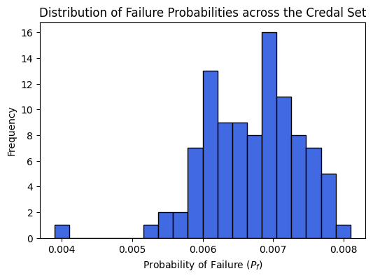

Ex 1: Optimization-Based Model & Vector Loops (2D / 4-DOF)
This notebook demonstrates the manual construction of the tolerance analysis model for the minimal 2D assembly (a rectangular part within a rectangular pocket).
Rather than relying on analytical geometric projections, we use vector loops, transformation matrices, and gap matrices to model the stack-up of defects. This formal mathematical structure is necessary for handling over-constrained systems and forms the foundation of the otaf methodology.
The Slack Variable Formulation
Historically, Monte Carlo approaches for estimating failure rates rely on a discrete indicator function (a part is either conforming or non-conforming based on geometric interference). To apply advanced probability frameworks (surrogate models, subset sampling, gradient-based boundary searches), we require a continuous limit state function.
We introduce a scalar slack variable \(\mathbf{s}\). The interface constraints are modified such that:
By treating \(\mathbf{s}\) as the optimization objective (minimizing \(-\mathbf{s}\)), the optimizer effectively finds a relative central positioning of the parts that maximizes the minimal clearance across all interfaces.
:math:`mathbf{s} > 0`: The minimum clearance in the assembly (Conforming).
:math:`mathbf{s} < 0`: The magnitude of geometric interference (Failure).
[6]:
import numpy as np
import sympy as sp
import openturns as ot
import matplotlib.pyplot as plt
from IPython.display import display, clear_output
from time import time, sleep
from scipy.optimize import OptimizeResult
import otaf
# Identity and 180° rotation matrix around z
I4 = otaf.I4()
J4 = otaf.J4()
1. Definition of Nominal Dimensions & Hypotheses
We apply the parameters explicitly defined for the 2D base model:
Tolerance \(t = 0.31\) mm
Target process capability \(Cq_p = 1.0\)
[7]:
# Geometric parameters
X1 = 99.8 # Nominal Length of the male piece (Part 1)
X2 = 100.0 # Nominal Length of the female pocket (Part 2)
X3 = 10.0 # Nominal width of the features (h)
j_nom = X2 - X1 # Nominal play between parts
t = 0.31 # Tolerance value applied to features
Cqp = 1.0 # Target capability
2. Spatial Mapping and Local Reference Frames
We define the global coordinate system (\(\mathcal{R}_0\)) and the characteristic points of each interface surface. We then establish local reference frames for each substitute surface to correctly orient the transformation matrices.
[8]:
# Global Coordinate System (R0)
R0 = np.array([[1, 0, 0], [0, 1, 0], [0, 0, 1]])
x_, y_, z_ = R0[0], R0[1], R0[2]
# Part 1 (Male) Points
P1A0, P1A1, P1A2 = np.array((0, X3/2, 0.0)), np.array((0, X3, 0.0)), np.array((0, 0, 0.0))
P1B0, P1B1, P1B2 = np.array((X1, X3/2, 0.0)), np.array((X1, X3, 0.0)), np.array((X1, 0, 0.0))
P1C0, P1C1, P1C2 = np.array((X1/2, 0, 0.0)), np.array((0, 0, 0.0)), np.array((X1, 0, 0.0))
# Part 2 (Female Pocket) Points
P2A0, P2A1, P2A2 = np.array((0, X3/2, 0.0)), np.array((0, X3, 0.0)), np.array((0, 0, 0.0))
P2B0, P2B1, P2B2 = np.array((X2, X3/2, 0.0)), np.array((X2, X3, 0.0)), np.array((X2, 0, 0.0))
P2C0, P2C1, P2C2 = np.array((X2/2, 0, 0.0)), np.array((0, 0, 0.0)), np.array((X2, 0, 0.0))
# Local Reference Frames
RP1a = np.array([-1 * x_, -1 * y_, z_])
RP1b = R0
RP1c = np.array([-y_, x_, z_])
RP2a = R0
RP2b = np.array([-1 * x_, -1 * y_, z_])
RP2c = np.array([y_, -1 * x_, z_])
[9]:
# Pièce 1 (male)
P1A0, P1A1, P1A2 = (
np.array((0, X3 / 2, 0.0)),
np.array((0, X3, 0.0)),
np.array((0, 0, 0.0)),
)
P1B0, P1B1, P1B2 = (
np.array((X1, X3 / 2, 0.0)),
np.array((X1, X3, 0.0)),
np.array((X1, 0, 0.0)),
)
P1C0, P1C1, P1C2 = (
np.array((X1 / 2, 0, 0.0)),
np.array((0, 0, 0.0)),
np.array((X1, 0, 0.0)),
)
# Pièce 2 (femelle) # On met les points à hM et pas hF pour qu'ils soient bien opposées! (Besoin??)
P2A0, P2A1, P2A2 = (
np.array((0, X3 / 2, 0.0)),
np.array((0, X3, 0.0)),
np.array((0, 0, 0.0)),
)
P2B0, P2B1, P2B2 = (
np.array((X2, X3 / 2, 0.0)),
np.array((X2, X3, 0.0)),
np.array((X2, 0, 0.0)),
)
P2C0, P2C1, P2C2 = (
np.array((X2 / 2, 0, 0.0)),
np.array((0, 0, 0.0)),
np.array((X2, 0, 0.0)),
)
[14]:
# Generating transformation matrices
TMD = {}
TMD["T1c1a"] = otaf.TransformationMatrix(initial=otaf.geometry.tfrt(RP1c, P1C0), final=otaf.geometry.tfrt(RP1a, P1A0))
TMD["T2a2c"] = otaf.TransformationMatrix(initial=otaf.geometry.tfrt(RP2a, P2A0), final=otaf.geometry.tfrt(RP2c, P2C0))
TMD["T1c1b"] = otaf.TransformationMatrix(initial=otaf.geometry.tfrt(RP1c, P1C0), final=otaf.geometry.tfrt(RP1b, P1B0))
TMD["T2b2c"] = otaf.TransformationMatrix(initial=otaf.geometry.tfrt(RP2b, P2B0), final=otaf.geometry.tfrt(RP2c, P2C0))
TMD["TP1aA1aA0"] = otaf.TransformationMatrix(initial=otaf.geometry.tfrt(RP1a, P1A1), final=otaf.geometry.tfrt(RP1a, P1A0))
TMD["TP2aA0aA1"] = otaf.TransformationMatrix(initial=otaf.geometry.tfrt(RP2a, P2A0), final=otaf.geometry.tfrt(RP2a, P2A1))
TMD["TP1aA2aA0"] = otaf.TransformationMatrix(initial=otaf.geometry.tfrt(RP1a, P1A2), final=otaf.geometry.tfrt(RP1a, P1A0))
TMD["TP2aA0aA2"] = otaf.TransformationMatrix(initial=otaf.geometry.tfrt(RP2a, P2A0), final=otaf.geometry.tfrt(RP2a, P2A2))
TMD["TP1bB1bB0"] = otaf.TransformationMatrix(initial=otaf.geometry.tfrt(RP1b, P1B1), final=otaf.geometry.tfrt(RP1b, P1B0))
TMD["TP2bB0bB1"] = otaf.TransformationMatrix(initial=otaf.geometry.tfrt(RP2b, P2B0), final=otaf.geometry.tfrt(RP2b, P2B1))
TMD["TP1bB2bB0"] = otaf.TransformationMatrix(initial=otaf.geometry.tfrt(RP1b, P1B2), final=otaf.geometry.tfrt(RP1b, P1B0))
TMD["TP2bB0bB2"] = otaf.TransformationMatrix(initial=otaf.geometry.tfrt(RP2b, P2B0), final=otaf.geometry.tfrt(RP2b, P2B2))
3. Constructing Compatibility Loops
We define the deviation matrices and structural gaps. Note that for this 4-DOF model, defects are only modeled on Feature B for both parts (translation in \(x\) and rotation in \(z\)).
[15]:
# No-defect matrices for ideal surfaces
DI4 = otaf.DeviationMatrix(index=-1, translations="", rotations="")
# Loop 1: Compatibility (2c -> 1c -> 1a -> 2a)
GP2cC0P1cC0 = otaf.GapMatrix(index=0, translations_blocked="z", rotations_blocked="xy")
GP1aA0P2aA0 = otaf.GapMatrix(index=1, translations_blocked="z", rotations_blocked="xy")
expa_1 = otaf.FirstOrderMatrixExpansion([
DI4, GP2cC0P1cC0, J4, DI4, TMD["T1c1a"],
DI4, GP1aA0P2aA0, J4, DI4, TMD["T2a2c"]
]).compute_first_order_expansion()
# Loop 2: Compatibility (2c -> 1c -> 1b -> 2b) - Defect Introduction Here
D1b1b = otaf.DeviationMatrix(index=1, translations="x", rotations="z")
GP1bB0P2bB0 = otaf.GapMatrix(index=2, translations_blocked="z", rotations_blocked="xy")
D2b2b = otaf.DeviationMatrix(index=2, translations="x", rotations="z", inverse=True)
expa_2 = otaf.FirstOrderMatrixExpansion([
DI4, GP2cC0P1cC0, J4, DI4, TMD["T1c1b"],
D1b1b, GP1bB0P2bB0, J4, D2b2b, TMD["T2b2c"]
]).compute_first_order_expansion()
compatibility_expressions = [
*otaf.common.extract_expressions_with_variables(expa_1),
*otaf.common.extract_expressions_with_variables(expa_2)
]
4. Interface Constraints and the System of Constraints (SOCAM)
We verify the limits of the geometric interfaces. By passing these expressions to SystemOfConstraintsAssemblyModel and invoking embedOptimizationVariable(), otaf automatically introduces the scalar slack variable \(\mathbf{s}\). The assembly state is transformed into the minimization problem: \(\min -\mathbf{s}\).
[16]:
# Interfaces on A and B sides
expa_f_1 = otaf.FirstOrderMatrixExpansion([TMD["TP1aA1aA0"], GP1aA0P2aA0, J4, TMD["TP2aA0aA1"], J4]).compute_first_order_expansion()
expa_f_2 = otaf.FirstOrderMatrixExpansion([TMD["TP1aA2aA0"], GP1aA0P2aA0, J4, TMD["TP2aA0aA2"], J4]).compute_first_order_expansion()
expa_f_3 = otaf.FirstOrderMatrixExpansion([TMD["TP1bB1bB0"], GP1bB0P2bB0, J4, TMD["TP2bB0bB1"], J4]).compute_first_order_expansion()
expa_f_4 = otaf.FirstOrderMatrixExpansion([TMD["TP1bB2bB0"], GP1bB0P2bB0, J4, TMD["TP2bB0bB2"], J4]).compute_first_order_expansion()
# Masking to extract the relevant spatial clearance component
mask_matrix = sp.Matrix(np.array([[0, 0, 0, 1], [0, 0, 0, 0], [0, 0, 0, 0], [0, 0, 0, 0]]))
interface_constraints = [
*otaf.common.extract_expressions_with_variables(expa_f_1.multiply_elementwise(mask_matrix)),
*otaf.common.extract_expressions_with_variables(expa_f_2.multiply_elementwise(mask_matrix)),
*otaf.common.extract_expressions_with_variables(expa_f_3.multiply_elementwise(mask_matrix)),
*otaf.common.extract_expressions_with_variables(expa_f_4.multiply_elementwise(mask_matrix))
]
# Build the global assembly model
SOCAM = otaf.SystemOfConstraintsAssemblyModel(compatibility_expressions, interface_constraints, verbose=0)
# Introduces the scalar slack variable s to transform the constraint set
SOCAM.embedOptimizationVariable()
print(f"Deviation Symbols: {SOCAM.deviation_symbols}")
Deviation Symbols: [u_d_1, gamma_d_1, u_d_2, gamma_d_2]
5. Statistical Modeling: Exploring the Credal Set
Instead of directly defining and re-sampling a multi-dimensional distribution for every point in the epistemic space, we define a master distribution based on the maximum standard deviation allowed by \(t\) and \(C_p\).
We navigate the space of possible distributions using a normalized scaling vector \(\symbf{\lambda} \in [0,1]\). Multiplying a fixed normal sample by \(\symbf{\lambda}\) prevents re-sampling noise, guaranteeing that adjacent points in the credal set yield smooth, directly comparable gradients.
[17]:
# Maximal allowable standard deviations based on the capability constraint
y_max = X3 / 2.0
sigma_u_max = t / (6 * Cqp)
sigma_gamma_max = sigma_u_max / y_max
# Construct the base random vector (at maximum possible variability)
RandDeviationVect = otaf.distribution.get_composed_normal_defect_distribution(
defect_names=SOCAM.deviation_symbols,
sigma_dict={
"alpha": sigma_gamma_max,
"beta": sigma_gamma_max,
"gamma": sigma_gamma_max,
"u": sigma_u_max,
"v": sigma_u_max,
"w": sigma_u_max
}
)
WARNING:root:No mu_dict passed, initializing all unspecified means to 0.0
6. Optimization Loop (Latin Hypercube Sampling)
To visualize the bounds of the probability of failure (\(\underline{P_f}\), \(\overline{P_f}\)), we generate a set of \(\symbf{\lambda}\) vectors. While advanced solvers (like COBYQA) are strictly required for high-dimensional efficiency, Latin Hypercube Sampling (LHS) provides a clear brute-force visualization of the P-Box behavior for this introductory 4-DOF model.
[18]:
# Generate scaling parameters lambda
Dim_Defects = len(SOCAM.deviation_symbols)
lambda_vect_unconditioned = ot.ComposedDistribution([ot.Uniform(0, 1)] * Dim_Defects)
lambda_vect_unconditioned.setDescription(list(map(str, SOCAM.deviation_symbols)))
N_lambda = 100 # Reduced for notebook performance
lambda_sample_random = lambda_vect_unconditioned.getSample(N_lambda)
lambda_sample_conditioned = otaf.sampling.condition_lambda_sample(lambda_sample_random, squared_sum=True)
# Optimization config
SEED_MC_PF = 6436431
SIZE_MC_PF = int(1e4)
failure_probabilities, s_values = [], []
start_time = time()
# Brute force exploration of the credal set
for i in range(N_lambda):
ot.RandomGenerator.SetSeed(SEED_MC_PF)
# Scale the base sample deterministically to avoid sampling noise
deviation_samples = np.array(RandDeviationVect.getSample(SIZE_MC_PF)) * np.array(lambda_sample_conditioned[i])
optimizations = otaf.uncertainty.compute_gap_optimizations_on_sample(
SOCAM,
deviation_samples,
bounds=None,
n_cpu=-1,
progress_bar=False,
)
# Evaluate slack variable (failure defined as s < 0)
s_vals = np.array([opt.fun for opt in optimizations], dtype=float)
s_vals = np.nan_to_num(s_vals, nan=np.nanmax(s_vals)) * -1
failure_probabilities.append(np.where(s_vals < 0, 1, 0).mean())
if i % 10 == 0:
clear_output(wait=True)
print(f"Processed {i}/{N_lambda} lambda configurations.")
print(f"Elapsed time: {time() - start_time:.3f} seconds.")
# Extract the bounds
X = otaf.uncertainty.find_best_worst_quantile(np.array(lambda_sample_conditioned), np.array(failure_probabilities), 0.1)
(best_5p_lambda, best_5p_res), (worst_5p_lambda, worst_5p_res) = X
Processed 90/100 lambda configurations.
Elapsed time: 637.291 seconds.
---------------------------------------------------------------------------
AttributeError Traceback (most recent call last)
Cell In[18], line 44
41 print(f"Elapsed time: {time() - start_time:.3f} seconds.")
43 # Extract the bounds
---> 44 X = otaf.uncertainty.find_best_worst_quantile(np.array(lambda_sample_conditioned), np.array(failure_probabilities), 0.1)
45 (best_5p_lambda, best_5p_res), (worst_5p_lambda, worst_5p_res) = X
AttributeError: module 'otaf.uncertainty' has no attribute 'find_best_worst_quantile'
[19]:
# Output P-Box Bounds
print(f"Lower Bound Probability of Failure (min Pf): {min(failure_probabilities) * 100:.4f}%")
print(f"Upper Bound Probability of Failure (max Pf): {max(failure_probabilities) * 100:.4f}%")
plt.figure(figsize=(6, 4))
plt.hist(failure_probabilities, bins=20, color='royalblue', edgecolor='black')
plt.title("Distribution of Failure Probabilities across the Credal Set")
plt.xlabel("Probability of Failure ($P_f$)")
plt.ylabel("Frequency")
plt.show()
Lower Bound Probability of Failure (min Pf): 0.3900%
Upper Bound Probability of Failure (max Pf): 0.8100%

[ ]: